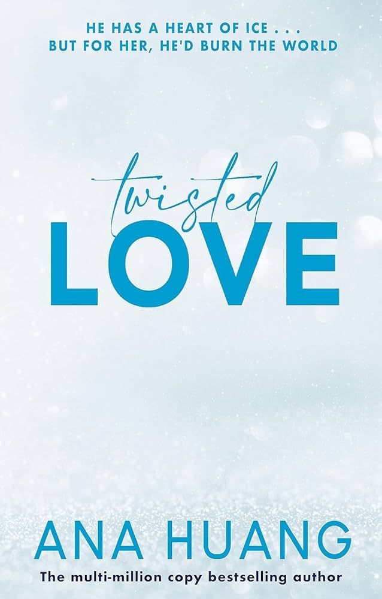

"Twisted Love" is the first book in the Twisted series by Ana Huang. It follows the story of Ava Chen and Alex Volkov, two individuals who are complete opposites but find themselves
drawn to each other despite the challenges they face.
Key Characters
Ava Chen: A free-spirited woman haunted by the nightmares of her childhood. Despite her broken past, she sees the beauty in the world and in Alex.
Alex Volkov: A successful businessman with a heart of ice, driven by a tragic past and a desire for vengeance. He is blessed with a handsome face but cursed with a past he can't escape.
Plot Summary
When Ava's brother, Josh, leaves for a year-long internship, he asks his best friend, Alex, to look after his sister. Despite their initial hostility, Alex and Ava find themselves drawn
to each other. As they navigate their growing feelings, they uncover secrets from their pasts that threaten to destroy them.
Alex, who has a highly superior autobiographical memory, is determined to find the person responsible for his family's murder years ago. Meanwhile, Ava struggles with repressed memories
from her own traumatic childhood. Their relationship is further complicated by Alex's possessive and morally gray nature.
As their love story unfolds, it becomes clear that their love is not a simple one, but rather a twisted tale of passion, pain, and self-discovery. The book explores themes of
vulnerability, submission, and the lasting effects of childhood trauma.
Tropes and Themes
"Twisted Love" incorporates several popular romance tropes, including:
Brother's best friend
Grumpy and sunshine characters
Possessive and jealous male lead
Morally gray characters
The book also delves into the darker side of love, showcasing the complexities and challenges that come with opening oneself up to emotional vulnerability.
Conclusion
"Twisted Love" is a steamy, addictive, and entertaining read that will appeal to fans of dark, twisted romance. While the plot may not be entirely original, Ana Huang's writing
style and the complex characters make this book a page-turner. The story explores the depths of human emotions and the power of love to heal even the most broken of souls.